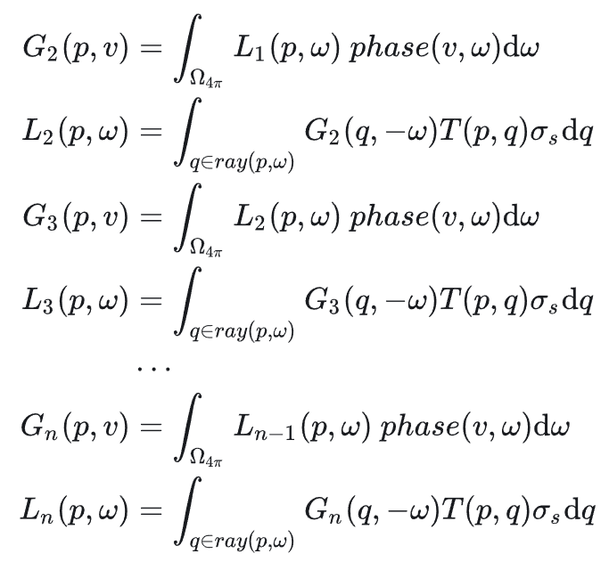

真实大气渲染
前言
近期去了海南旅游，有幸观赏到了美丽的日落，配上洁净的沙滩和硕果累累的椰树可以称得上是种享受。现在想想，这种美丽的晚霞也非首次目睹，然而即便是欣赏了上千次，每当通过那绚烂的大气层看向那浩瀚无垠的银河时仍会感到头晕目眩。
此外，在本人玩过的游戏中，欧卡2中的大气和云也是令人印象深刻，比如下面这张（忘了是在哪里截的了，好像是在荷兰？）。不过这个云感觉不是用噪声做的，太逼真了，层次也分明。之前特意观察过，云似乎是有多张实拍的贴图，随着时间做简单的线性插值的。

当然巫师3的大气也很美，下面这张图好像是在陶森特截的。一个题外话，GAMES104也拿类似的场景举过例子，最终的画面表现中Bloom功不可没。不过感觉这张截图中的Fog似乎用力过猛了。

既然无论是湛蓝的晴天还是翠绿兼血红的晚霞都能让我们浮想联翩，不如手动去创造一个出来。
参与介质和体渲染
显而易见地是，大气是一种参与介质，光会与参与介质发生以下的几种交互：
自发光
粒子吸收能量后释放光能就有了发光现象，对于大气可以先不考虑这种交互的影响。
散射
散射分为两种，首先是外散射，表现为光线被散射后脱离视线方向。然后是内散射，对于某个粒子来说，周围粒子发生外散射后一部分光线偏向了该粒子，为它带来了额外的能量。也就是说，其实只有一种散射即外散射，但是对于它发生一次或是多次的情况需要分别考虑。这里就把单次散射和多次散射建立了联系，后面会看到具体是怎么回事。
定义散射系数为$\sigma_s$，基于大气的密度在高度上的分布是不均匀的，以及粒子对不同波长的光散射率不一样这两个观察，可以知道$\sigma_s$是关于波长$\lambda$和高度$h$的函数。为了方便后续的讨论，我们希望能够将散射系数拆分为为两个函数乘积的形式，这两个函数分别以$\lambda$和$h$作为参数。选择某一高度作为基准平面（海平面），计算此时的散射系数为$\sigma(\lambda,0)$，并使用$\rho(h)$来表示介质密度随高度的分布，散射系数可表示为
$$\sigma_s(\lambda, h)=\sigma(\lambda,0)\rho(h)$$
吸收
介质的吸收系数用$\sigma_a$来表示，[2]中提到了它是一个概率密度函数，因此取值范围不是0到1。在一段极短距离$dt$上（其实应该用导数符号的，偷个懒），辐照度的吸收量即
$$dL_o=-\sigma_a L_i dt$$
解微分方程即得到某段距离$d$上的能量保留率，在计算时我们会使用分段求和的方式来逼近这个积分
$$e^{-\int_0^d\sigma_a(p+\omega t, \omega) dt}$$
同样的，吸收系数也是关于波长$\lambda$和高度$h$的函数，我们也会使用它的分解形式来计算。
透射率
外散射也可以理解为一种衰减，不妨考虑一条光线沿直线传播，将散射系数$\sigma_s$加上吸收系数$\sigma_a$，再定义湮灭系数$\sigma_t=\sigma_a+\sigma_s$。仿照计算能量保留率的思路，可以算出来光线透过某个介质后的能量还剩下多少，称之为透射率Transmittance：
$$T=e^{-\int_0^d\sigma_t(p+\omega t, \omega) dt}$$
由于指数函数，很容易可以看出某一段路径的Transmittance等价于多段子路径Transmittance的乘积。同时把指数上的积分单独拎出来看的话，它也等价于所有子路径上积分值的和。不妨为这个积分（不考虑符号）起个名字，叫光学深度$\tau$，数学上即为对应的积分：
$$\tau=\int_0^d\sigma_t(p+\omega t, \omega) d$$
只要能算出$\tau$，透射率自然就能拿到了。不过在实现大气散射的过程中，只需要知道Transmittance的计算方法就行了，我们不会去单独计算和存储光学深度。
相位函数
我们已经定义了散射系数，它的意义是在某一点上能量被散射的概率，那被散射的能量在不同的方向上是如何分布的呢？这就要请出相位函数了，它是一个在球面上积分为1的函数，描述了某个方向上逃逸的散射光能量的百分比。为了简化问题，假设相位函数是各向同性的，定义为$phase(\theta)$，其中$\theta$即为外散射方向与入射方向的夹角。
散射函数
将散射系数与相位函数相乘就得到了我们所需要的散射函数
$$S=\sigma_s \cdot phase(\theta)$$
常见的散射方式
大气中常见的两种散射为瑞利散射和米氏散射，他们对应了不同的基准散射系数$\sigma(\lambda,0)$、相位函数$phase(\theta)$和密度分布函数$\rho(h)$。
瑞利(Rayleigh)散射
瑞利散射发生于粒子远小于波长的情况下，它的方向性较弱，但是散射率随波长的变化较大。瑞利散射对于蓝光的散射率很大，因此有了蓝天；它对红光的散射较弱，在傍晚由于蓝光由于传播距离增大和多次散射而几乎衰减殆尽，而红光则能够顺利地到达地面，因此傍晚的天空呈玫瑰红色。瑞利散射和吸收不会同时发生。瑞利散射的各种属性参考本节的表格。
米氏(Mie)散射
当大气中粒子的直径与辐射的波长相当时则发生米氏散射。它有很强的方向性，不过对于不同波长的光基本一视同仁。同时，发生米氏散射的粒子同时也会发生吸收，且散射和吸收共用一个密度随高度的分布函数。米氏散射的各种属性也请参考本节的表格。
光与介质的其他交互方式
为了实现更真实的大气，我们还需要考虑臭氧层，它的特点是不发生散射只发生吸收。
参数速查表
通过上面的描述，可以总结出我们需要的所有参数分别是：基准平面处的散射系数$\sigma_s(\lambda,0)$、密度随高度的分布$\rho(h)$、
基准平面处的吸收系数$\sigma_a(\lambda,0)$以及相位函数$phase(\theta)$。两种散射的高度函数都是以指数衰减的形式定义的，使用标高$H$来进行归一化，而臭氧层的密度由于不是随高度单调变化的，所以它的$\rho(h)$会有所不同。之后会使用上标来区分这几种交互方式。
对于米氏散射而言，它的相位函数带有额外的各向异性参数$g$，用于调节散射波瓣的形状。
散射系数和吸收系数在不同的参考资料中有细微的差别，下面的具体值与参考资料[1]相同。
| Rayleigh | Mie | Ozone | |
|---|---|---|---|
| $\sigma_s(\lambda,0)$ | $(5.802,13.558,33.1) \times 1e^{-6}$ | $(3.996,3.996,3.996) \times 1e^{-6}$ | 无 |
| $\sigma_a(\lambda,0)$ | 无 | $(4.40,4.40,4.40) \times 1e^{-6}$ | $(0.650,1.881,0.085) \times 1e^{-6}$ |
| $phase(\theta)$ | $\frac{3}{16\pi}(1+\cos^2\theta)$ | $\frac{3}{8\pi}\frac{1-g^2}{2+g^2}\frac{1+\cos^2\theta}{(1+g^2-2g\cos \theta)^{3/2}}$ | 无 |
| $\rho(h)$ | $e^{-h/H}, H=8500m$ | $e^{-h/H}, H=1200m$ | $max(0,1-\frac{|h-c|}{w}),c(enter)=25km,w(idth)=15km$ |
通用的相位函数
查阅资料发现，其实还有一些更通用的相位函数，比如HG(Henyey-Greenstein)和Draine相位函数。米氏散射的相位函数就是Draine（见下式）相位函数在$\alpha=1$时的特例：

单次散射模型
有了上面对于某种粒子的散射与吸收的模型，我们来着手考虑光从太阳到相机的这段路途上发生了什么。在不考虑自发光的假设下，只需要累加视线上所有粒子的内散射乘上该粒子到相机中间的透射率即可得到来自大气的辐照度，表达为数学式如下：
$$L_i(c,v)=\int_{t=0}^{||p-c||}T(c,c+vt)L_{in-scattering}(c+vt,-v)\sigma_s dt$$
上式中的$L_{in-scattering}(c+vt,-v)$包含了某个粒子的所有内散射，即周围粒子传递给该粒子的能量乘以相位函数的总和。它实际上是一个球面上的积分，显然很不好算，我们不妨来考虑一个简化的模型：对于积分路径上的粒子，我们只考虑有多少阳光直直地穿过大气并到达了这个粒子，它散射到视线方向上的光又有多少成功透过大气到达了相机。也就是说模型统计了如下路径的贡献：太阳$\rarr$透射$\rarr$粒子$\rarr$散射$\rarr$透射$\rarr$相机，称之为单次散射模型。同样的，我们只需要在视线上做如下的积分即可，下面的示意图来自[1]：

也就是说，我们需要计算的量为从太阳到某点$p$的透射率$T1$，点$p$的散射函数$S$以及点$p$到相机的透射率$T2$。由于要使用分段求和去逼近积分，所以肯定需要遍历路径上的每一个点，中间可以顺手把$T2$和$S$算出来，但是$T1$的话会额外增加一层循环，对于实时渲染来说难以接受平方的复杂度。所以考虑能否将太阳到某点$p$的透射率预计算出来。
预计算Transmittance
首先一个最简单的观察，在相同的高度上，透射率是各向同性的，也就是说天顶角相同时的透射率也相等。根据这个观察就只有两个参数要在意了，即离地心的距离$r$（减去半径就是高度）和天顶角的余弦$\mu=\cos \theta$，可以制成一张二维的LUT供查询。这样就需要将$r$和$\mu$映射到UV，根据[1]，使用归一化地平线的切线长度作为$u$，并用归一化后的视线上下扫射能够所取到的距离作为$v$，能够提高查找表的利用效率并避免在极点处产生瑕疵。
实现UV的映射后，只需要一个全屏的Pass就行了，计算出来的结果如图：

然后我们就可以利用这张LUT，在自定义天空盒材质中采样了，最终的渲染结果如下。


在实验中发现使用距离来归一化天顶角还是会在头顶上产生畸变，如下图所示，之后试着用一下[5]中提到的映射方式：

多次散射模型
只考虑单次散射大多数情况下是足够的，不过当太阳高度角很小甚至为负时就会显得有些不足了，特别是头顶上会显得死黑，我们来尝试处理一下多次散射。将光线在大气中发生散射的次数称为大气散射的阶数。
定义$L_n(p,\omega)$为在经历了$n$阶散射后从$p$沿着$\omega$方向看向天空的光照，也就是我们最终要求的量，$G_n(p,v)$为考虑$n$阶散射的情况下$p$点散射到$v$方向上的能量和，注意在下面的定义中$G$项的积分内部并没有乘上散射系数，公式截图来自[1]：
将$G$的定义带入到$L$中可以看出这是一个三重积分，计算复杂度很高。不过球面上的采样数并不需要太高，这个性质可以利用一下。传统方法中，$n$阶散射由迭代更新得出，输入$L_{n-1}$，根据四个参数$r,\mu,\mu_{s},\nu$，计算一次二次散射，即可得到$L_n$并制成一张4D的LUT，如下图所示：

Epic基于对于Path Tracing Reference的观察，提出了一种简化的计算方式，基于下面的两个假设，分别是：
- 大于等于2阶的散射中的相位函数趋于各向同性
- 计算大于2阶的散射时，认为某点周围任意一点的$G_n$与其相同
第一点意味着，在相位函数变为各项同性时，可以把4个参数中的$\mu$和$\mu_{s}$这两个角度干掉，将LUT降低到2维。
新方法的主要亮点在于第二点，[1]和[4]中都给出了简要的推导，这里复制了[4]中的推导过程，首先再次给出$G$和$L$的定义：

根据假设2，在计算大于2阶的散射时，$G$项对于路径上的点来说都是常数，可以从积分里提出来

定义$L_f$和$f_{ms}$为，$f_{ms}$为传输函数

可以注意到刚才的式子中的积分部分其实就是$L_f$，将定义带入到式子中可以得到相邻阶$G_n$之间的一个比例关系

这样，如果能算出$f_{ms}$和$G_2$的话，就可以直接利用等比数列求和算出来无穷阶的$G$了

$f_{ms}$和$G_2$都是三重积分，原论文[5]中在球面上均匀取了64个采样方向，每个方向步进20步，最终的结果保存为一张32*32的二维LUT，UV代表的分别是归一化高度和太阳天顶角

具体实现中，使用Fibonacci采样预先生成64个方向，做Ray Marching时计算Single Scattering并积累到$G_2$上并利用之前的Transmittance LUT顺便计算$f_{ms}$，渲染Sky View LUT时累加多重散射项即可。加上多重散射后的对比如下，最明显的不同就是天空会更蓝一点

Atmospheric Fog
远景的物体也会收到大气散射的影响，我们实际看到的颜色应该为(远处物体的反射光×远处物体到相机的透射率+远处物体到相机对应视线路径上的大气散射光)。这样的话需要对于每一个着色点都需要做Ray Marching来计算透射率和散射光，考虑如何做成LUT提高计算效率。
方法就是将视锥按照深度分层，每层的分辨率都很小比如32x32，每层都单独计算Scattering和Transmittance，后处理时对这个LUT做三线性插值并与Color Buffer混合即可。这种方法的不足就是没有体积效果。
在项目实现中，会从最近的分层开始逐渐向远处计算，这样就能复用之前累加的光学深度了。将视锥按照线性深度均匀地划分为16层，每层最多步进4步，相当于32*32条光线在带有距离限制的情况下步进了64步。
[1]中提到可以利用光学深度的性质采样两次Transmittance LUT来查询一段路径上的Transmittance，窃以为有两点不足，一是多了两次采样，二是Transmittance LUT本身对应的光线覆盖距离区间很大且精度不高，而View Frustum一般不会有那么大，所以不如在步进中重新算一遍来的实在。
下面是加上Atmospheric Fog的效果，远处的山多了朦胧的感觉

总结
最后附上项目地址：Github